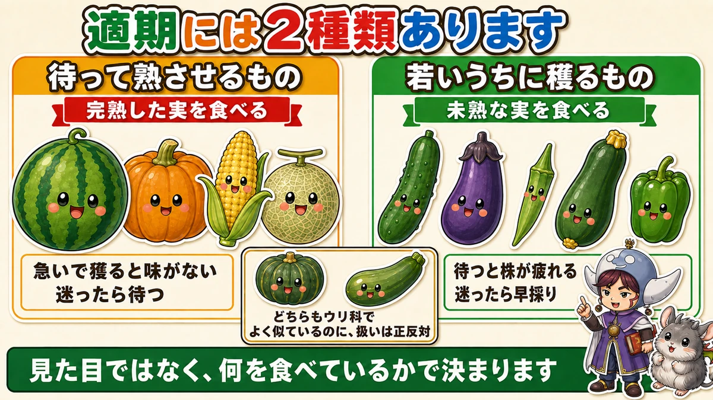
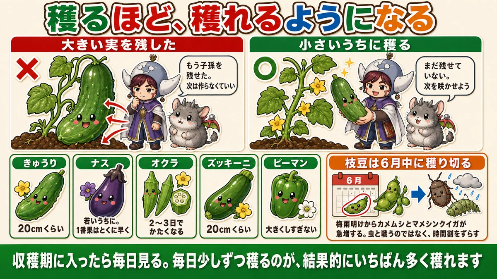
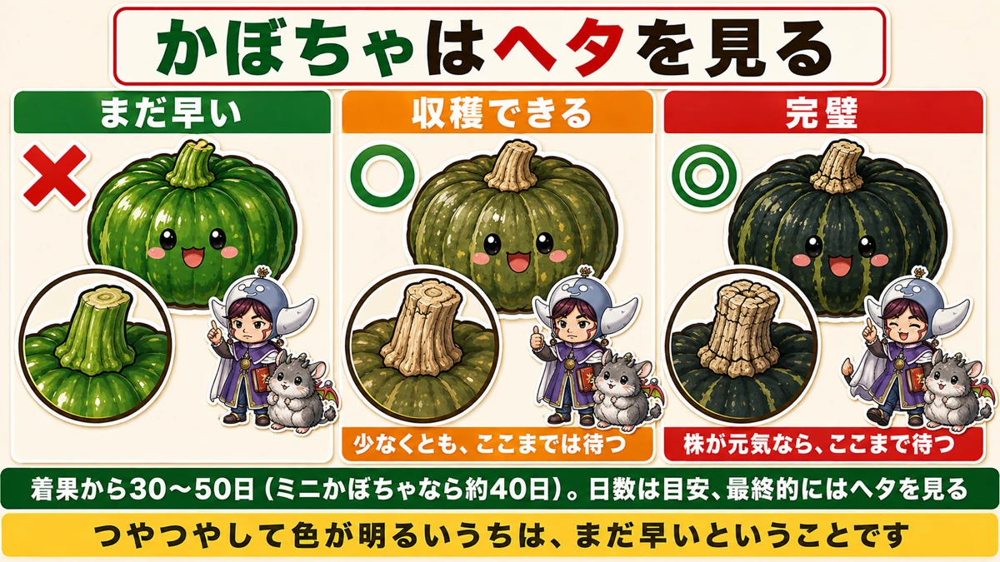
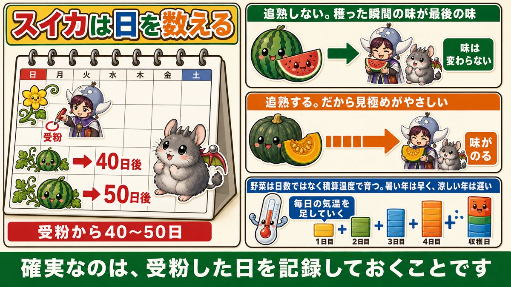

迷ったら早採り。ただし例外があります🥒 逆にすると両方失敗します

🗨️「いつ穫ればいいのか、毎回迷う」
🗨️「大きくしたくて待っていたら、かたくなった」
🗨️「急いで穫ったら、味がしなかった」
どうも、8150（えいこう）です🌱 家庭菜園歴8年、理科の教員免許を持っていて、有機・無農薬で野菜を育てています。
収穫は、いちばん楽しい作業です。そして★いちばん判断を間違えやすい作業でもあります。
先に、この記事でいちばん言いたいことを言っておきます。
★収穫の適期には、2種類あります。
この2つを取り違えると、どちらも失敗します。まずそこからお話しします☺️

📖 この記事の目次
★★2種類の「適期」
①待って、熟させるもの
ひとつ目のグループです。
- スイカ
- かぼちゃ
- とうもろこし
- メロン
これらは★完熟した実を食べる野菜です。
★急いで穫ると、味がありません。甘くなる前に取ってしまうと、その実はもう甘くなりません。
だから、★サインを読んで待ちます。
②若いうちに、穫るもの
ふたつ目のグループです。
- きゅうり
- ナス
- オクラ
- ズッキーニ
- ピーマン
これらは★まだ未熟な実を食べる野菜です。
きゅうりも、ナスも、放っておけばもっと大きくなります。★でも、大きくなったものは食べられません。かたくて、タネが目立って、味も落ちます。
そして、もっと大事なことがあります。★待つと、株が疲れます。
★★分かれ目は「完熟か、未熟か」
覚え方はこれだけです。
★完熟した実を食べる野菜 → 待つ
★未熟な実を食べる野菜 → 早めに穫る
★かぼちゃとズッキーニは、どちらもウリ科でよく似ています。でも扱いは正反対です。かぼちゃは完熟を食べ、ズッキーニは未熟を食べる。★見た目ではなく、何を食べているかで決まります。
★迷ったら早採り。ただし例外があります
未熟を食べる野菜は、早採り
判断に迷ったときの原則です。
★きゅうり、ナス、オクラ、ズッキーニは、迷ったら早めに穫ってください。
理由は、株が助かるからです。次の章でくわしくお話しします。
完熟を食べる野菜は、待つ
逆に、こちらは待ちます。
★スイカ、かぼちゃ、とうもろこしは、迷ったら待ってください。
早く穫ってしまうと、★取り返しがつきません。とくにスイカは、穫ったあとに甘くなることがない野菜です。
★この2つを逆にすると、両方失敗します
よくある失敗が、これです。
- きゅうりを「もっと大きく」と待って、かたくして、株を疲れさせる
- スイカを「早く食べたい」と穫って、味がしない
★どちらも、良かれと思ってやっています。原則が逆だっただけです。
★なぜ「待つと株が疲れる」のか
実は、栄養を吸い続けています
前に6月号で、「収穫はごほうびではなく作業」とお伝えしました。ここをもう少しくわしくお話しします。
★実が株についているあいだ、株はそこへ栄養を送り続けています。
大きくするため、そしてタネを成熟させるためです。

★株は「もう役目を果たした」と判断します
植物の目的は、タネを残すことです。
★大きく育った実の中で、タネが完成する。すると株はこう判断します。
★「もう子孫を残せた。次を作らなくていい」
これが起きると、新しい花が咲かなくなります。★1つの実を残したことで、その先の何十個が失われます。
★穫るほど、穫れるようになる
逆に、★小さいうちにどんどん穫るとどうなるか。
★株は「まだ子孫を残せていない」と考えて、次の花を咲かせます。
収穫は、株への合図でもあります。★穫るほど、穫れるようになる。これがその理由です。
1番果は、とくに早めに
前に5月号で、ナスの1番花を摘む話をしました。
★株がまだ小さいうちに実を太らせると、体を作る力が全部そこへ持っていかれます。
1番果は、★小さいうちに穫るか、いっそ摘んでしまう。★1個をあきらめて、何十個を穫るという考え方です。
★かぼちゃ ── ヘタを見ます
見るのは実ではなく、つなぎ目
ここからは、待つ野菜の見極め方です。
かぼちゃでいちばん確実なのは、★果梗（かこう）を見ることです。
果梗というのは、★実とつるをつないでいる、ヘタの部分です。

3つの段階があります
★まだ早い
- ヘタが緑色をしている
- 実の皮も緑で、ツヤがある
この状態は、まだまだです。
★収穫できる
- ★ヘタがコルクのように、かさかさになる（コルク化）
- ★縦にひび割れが入る
ここまで来たら、穫って構いません。
★完璧
- ★縦割れに加えて、横割れも入る
★ここまで待てれば、いちばんおいしいです。
★縦割れまでは、必ず待つ
判断の基準をはっきりさせておきます。
★少なくとも、縦割れが入るまでは待ってください。
そして★株がまだ元気なら、横割れまで待ったほうがいいです。
株が弱ってきていたり、葉が枯れてきているなら、縦割れの時点で穫ってしまって構いません。★株の状態も合わせて判断します。
実の側にも、サインがあります
ヘタと合わせて見ると確実です。
- ★ツヤがなくなって、黒っぽくなる
- ★模様がはっきりしてくる
つやつやして色が明るいうちは、まだ早いということです。
日数の目安
★着果してから30〜50日。品種によって違います。
★ミニかぼちゃなら、だいたい40日くらいです。
日数はあくまで目安で、その年の天候で前後します。★最終的にはヘタを見てください。
★★スイカ ── 受粉日を記録する
スイカは、追熟しません
かぼちゃとスイカは、決定的に違うところがあります。
★かぼちゃは追熟します。穫ったあと、置いておくと味がのってきます。
★スイカは追熟しません。★穫った瞬間の味が、そのまま最後の味です。
だから★スイカのほうが、見極めがずっと難しいんです。

★いちばん確実なのは、記録すること
いろいろな見分け方が言われています。
- 叩いた音
- 巻きひげが枯れる
- お尻のへこみ
どれも参考にはなりますが、慣れが要ります。
★確実なのは、受粉した日を記録しておくことです。
受粉から40〜50日
★受粉してから40〜50日が、収穫の目安です。
人工授粉をしたなら、その日をメモしておく。★カレンダーに印をつけて、そこから日数を数えるだけです。
★これがいちばん失敗しません。
前にとうもろこしの話をしたとき、「タネ袋の収穫までの日数を見る」とお伝えしました。★あれと同じで、時間を数えるのがいちばん確かです。
なぜ日数がぶれるのか
40〜50日と幅があるのは、★気温で変わるからです。
野菜は、日数ではなく★積算温度で育ちます。毎日の気温を足していって、ある数字に達したら熟す。
暑い年は早く、涼しい年は遅くなります。★だから幅を持たせて、40日を過ぎたら他のサインも見はじめる、という使い方がいいと思います。
★枝豆 ── 6月中に穫り切る
時期そのものが対策になります
枝豆は、少し違う考え方をします。
★3月4月に早まきしておけば、6月後半に収穫できます。
そして★6月中に穫り切ることに、大きな意味があります。
★梅雨明けから、虫が急増します
理由はこれです。
★梅雨明けから、カメムシやマメシンクイガが急に増えます。
どちらも★枝豆のさやに直接被害を与える虫です。中身を吸われたり、食われたりします。
★6月中に穫り終わっていれば、この時期をまるごと避けられます。
これも「ずらす」考え方です
前に3月号で、とうもろこしの話をしました。
★アワノメイガの産卵は梅雨明け直後。だから3月に植えて、その前に穫り終える。
★枝豆もまったく同じです。虫と戦うのではなく、時間割をずらす。
★無農薬でいちばん強いのは、この考え方だと思っています。
ネットに当たったら、先端を切る
ひとつ実用的なことを。
防虫ネットをかけていると、★枝豆が伸びてネットに当たるようになります。
そのときは、★先端をハサミで切ってしまって構いません。
★それより先には、もう実がつきません。ネットに押しつけられて傷むほうが損です。
早採りの野菜、目安のまとめ
大きくしすぎない
未熟を食べる野菜は、★「まだ小さいかな」くらいで穫るとちょうどいいです。
- ★きゅうり … 20cmくらい。1日で驚くほど育つので、毎日見る
- ★ナス … 若いうちに。1番果はとくに早く
- ★オクラ … かたくなるのが早い。★2〜3日見ないと食べられなくなる
- ★ズッキーニ … 20cmくらい。放っておくと巨大化する
- ★ピーマン … 大きくしすぎると株が疲れる
毎日見ることが、いちばんの対策
これらの野菜に共通しているのは、★育つのが速いことです。
昨日ちょうどよかったものが、今日には大きすぎる。★オクラは2〜3日でかたくなります。
前に5月号で「週1回見る」とお伝えしましたが、★収穫期に入ったら毎日です。
★毎日見て、少しずつ穫る。それが結果的にいちばん多く穫れます。
判断に迷ったら
この記事の要点
- ★★収穫の適期には2種類ある
- ★待って熟させるもの＝スイカ・かぼちゃ・とうもろこし・メロン（★完熟した実を食べる）
- ★若いうちに穫るもの＝きゅうり・ナス・オクラ・ズッキーニ・ピーマン（★未熟な実を食べる）
- ★分かれ目は、完熟を食べるか未熟を食べるか。★見た目ではない
- ★かぼちゃとズッキーニは似ているのに、扱いは正反対
- ★未熟を食べる野菜は、迷ったら早採り
- ★完熟を食べる野菜は、迷ったら待つ。★逆にすると両方失敗する
- ★実が株についているあいだ、株は栄養を送り続けている
- ★タネが完成すると、株は「もう子孫を残せた」と判断して次の花を咲かせない
- ★1つの実を残したことで、その先の何十個が失われる
- ★穫るほど、穫れるようになる
- ★1番果は小さいうちに穫るか、摘む
- かぼちゃは★果梗（ヘタ）を見る。★緑 → コルク化＋縦割れ → 横割れで完璧
- ★少なくとも縦割れまでは待つ。★株が元気なら横割れまで
- 実の側は★ツヤがなくなって黒っぽくなり、模様がはっきりする
- かぼちゃは★着果から30〜50日（ミニなら約40日）
- ★★かぼちゃは追熟する。★スイカは追熟しない
- スイカは★受粉した日を記録するのがいちばん確実。★受粉から40〜50日
- 日数がぶれるのは★積算温度で育つから。暑い年は早い
- 枝豆は★6月中に穫り切る。★梅雨明けからカメムシとマメシンクイガが急増する
- ★虫と戦うのではなく、時間割をずらす
- ★ネットに当たったら先端を切ってよい。それより先に実はつかない
- 早採りの野菜は★育つのが速い。★オクラは2〜3日でかたくなる
- ★収穫期に入ったら毎日見る。★毎日少しずつ穫るのが、結果的にいちばん多く穫れる
全部やろうとしなくて大丈夫です。まずは今日、きゅうりを1本、★「まだ小さいかな」というところで穫ってみてください。それが正解です🥒
次回は、猛暑の話。35℃を超えると野菜の中で何が起きているのか、そして何をすれば守れるのかをお話しします🌞
ここまで読んでくださって、ありがとうございました。
収穫ハサミ
引っぱって穫ると株が傷んで、次の実が止まります。切って穫るのが基本です。
![[商品価格に関しましては、リンクが作成された時点と現時点で情報が変更されている場合がございます。]](https://hbb.afl.rakuten.co.jp/hgb/56d22030.def85fa7.56d22031.b89fde86/?me_id=1250472&item_id=10022339&pc=https%3A%2F%2Fthumbnail.image.rakuten.co.jp%2F%400_mall%2Fplantz%2Fcabinet%2F01%2Ft-13.jpg%3F_ex%3D240x240&s=240x240&t=picttext "[商品価格に関しましては、リンクが作成された時点と現時点で情報が変更されている場合がございます。]")

収穫メッシュバッグ
肩にかけたまま穫れます。早採りは回数が増えるので、身軽さが効きます。

枝豆のタネ
6月中に穫り切る野菜です。適期は数日しかありません。
![[商品価格に関しましては、リンクが作成された時点と現時点で情報が変更されている場合がございます。]](https://hbb.afl.rakuten.co.jp/hgb/552615f0.9cc2855e.552615f1.776f7de9/?me_id=1251188&item_id=10000185&pc=https%3A%2F%2Fthumbnail.image.rakuten.co.jp%2F%400_mall%2Fyonezawa%2Fcabinet%2Ftane01%2F1011mame%2Fbeerfriendgf.jpg%3F_ex%3D240x240&s=240x240&t=picttext "[商品価格に関しましては、リンクが作成された時点と現時点で情報が変更されている場合がございます。]")
小玉スイカのタネ
受粉日を記録して、そこから日数で数える野菜の代表です。
![[商品価格に関しましては、リンクが作成された時点と現時点で情報が変更されている場合がございます。]](https://hbb.afl.rakuten.co.jp/hgb/56eb9cf5.81ab6dc5.56eb9cf7.881aa775/?me_id=1371758&item_id=10000697&pc=https%3A%2F%2Fthumbnail.image.rakuten.co.jp%2F%400_mall%2Fsuzunoen%2Fcabinet%2F07015728%2Fcompass1582531889.jpg%3F_ex%3D240x240&s=240x240&t=picttext "[商品価格に関しましては、リンクが作成された時点と現時点で情報が変更されている場合がございます。]")
あわせて読みたい